Accesso alla piattaforma, calendario, videolezioni registrate, lezioni in diretta,
registro elettronico, compiti e mappe per gli studenti BES. Valgono per tutte le lezioni, da subito.
Centro Studi TelesioNovembre 2026
In breve: a ogni lezione
Prima della lezione, controlla che lo studente abbia visto le videolezioni previste.
Avvia la registrazione appena entrato in aula. Senza registrazione la lezione è considerata non svolta.
Tieni la webcam accesa per tutta la lezione, e controlla che la tengano accesa anche gli studenti.
Fai lezione e verifica con domande ed esercizi che lo studente abbia davvero imparato.
Solo per gli studenti BES: l'ultimo quarto d'ora si costruisce la mappa insieme a lui.
Compila il registro elettronico lo stesso giorno: descrizione sintetica più il feedback individuale con le 4 righe obbligatorie.
Carica i compiti nel Quaderno dei compiti, con data di inserimento e data di consegna.
Indica nel feedback la registrazione o la videolezione da rivedere.
È obbligatorio assegnare i compiti a ogni lezione.
Nessuna lezione si chiude senza compiti o attività assegnati, con la loro scadenza.
Vale anche quando la lezione non si è svolta per assenza dello studente.
1. Accedere alla piattaforma
L'indirizzo della piattaforma è centrostuditelesio.soluzionefad.it.
Nome utente e password vengono consegnati dalla Direzione. Non si condividono con nessuno.
1
Apri la piattaforma, inserisci la tua e-mail e la tua password, poi clicca «Accedi».
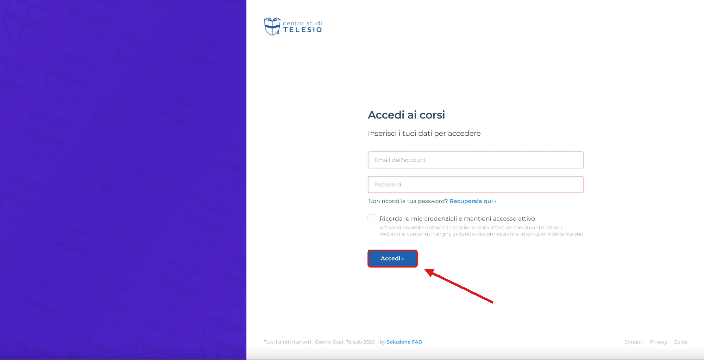
Pagina di accesso
2
In alto a destra clicca l'icona del profilo, poi «Vai all'area admin».
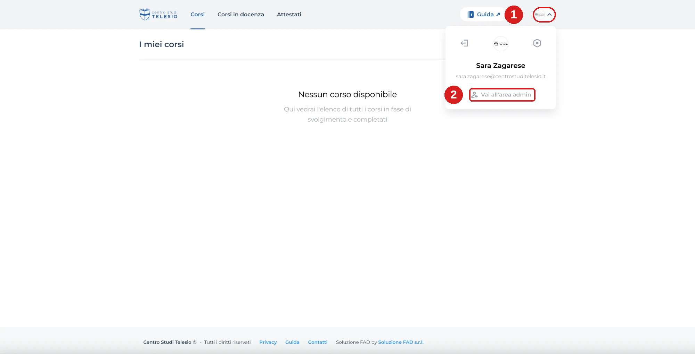
Menu del profilo
2. Il calendario delle lezioni in diretta
1
Nell'area Admin, in alto a destra, clicca l'icona del calendario.
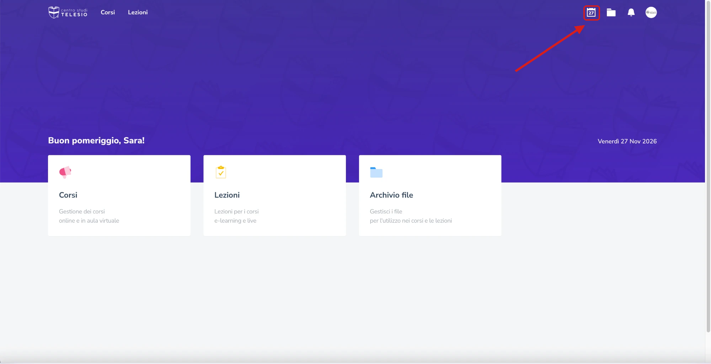
Area Admin: l'icona del calendario è in alto a destra
2
Si apre il calendario delle lezioni programmate. Con l'interruttore in alto a destra
passi dalla vista mensile alla vista settimanale. Con le frecce ‹ e ›
ti sposti da un mese all'altro; «Oggi» riporta alla data di oggi.
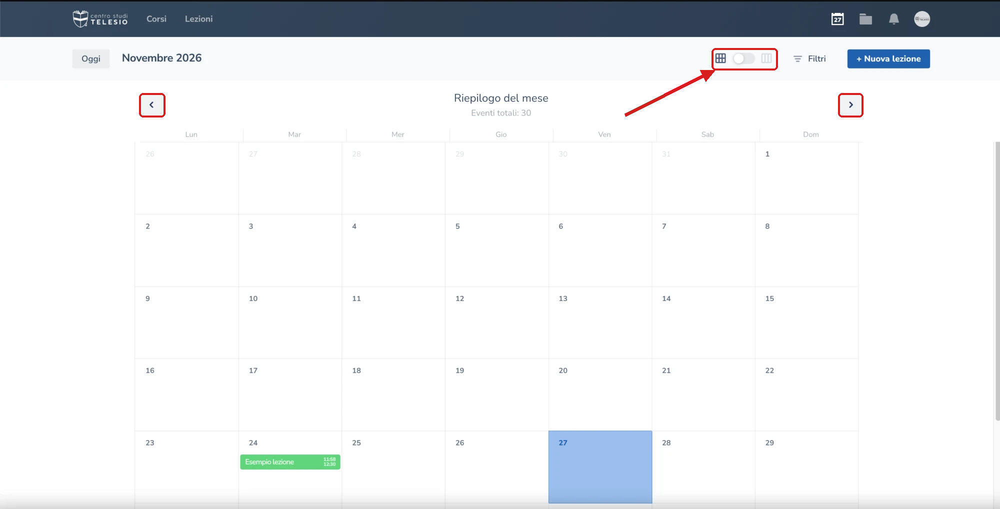
Vista mensile: il quadro di tutte le lezioni programmate
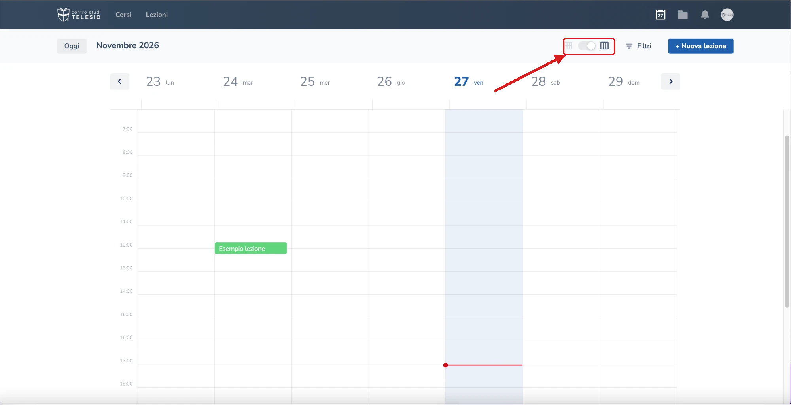
Vista settimanale: le lezioni con il loro orario
3
Clicca su una lezione per vederne i dettagli: data, orario, aula, docente e corso associato.
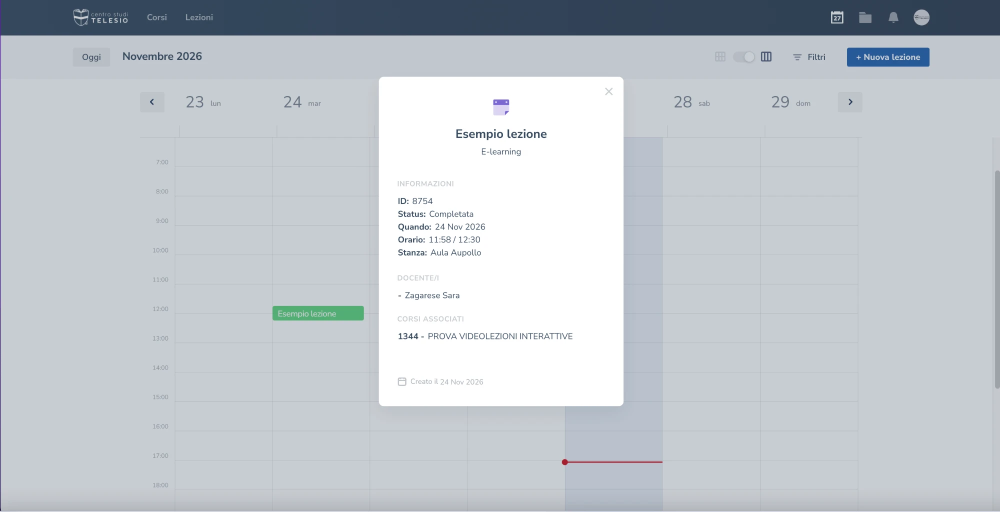
Dettaglio della lezione
Da questo riquadro non si entra in aula: serve solo a controllare quando è la lezione.
Per entrare in aula vedi la sezione 4.
3. I corsi e le videolezioni registrate
Ogni docente vede i corsi delle proprie materie e tutti i materiali che contengono.
1
Dal menu in alto clicca «Corsi in docenza»: compare l'elenco delle tue materie.
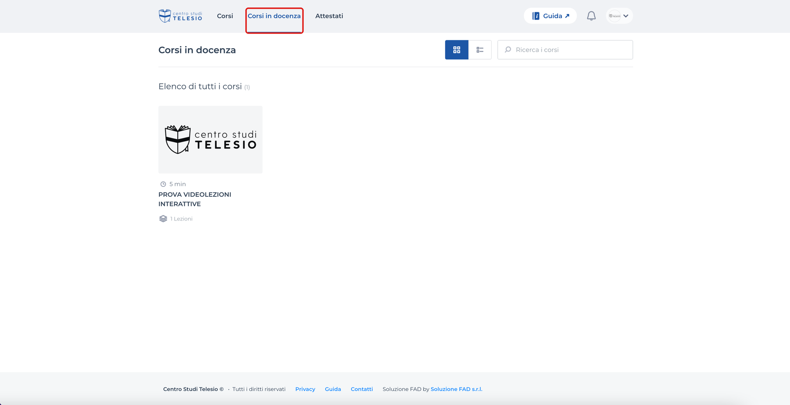
Menu «Corsi in docenza»
2
Clicca sul corso. Si apre la pagina con le informazioni della lezione e, sulla destra,
«Avanzamento del corso» con l'elenco di tutte le lezioni. Per aprire una videolezione
clicca il tasto ▶.
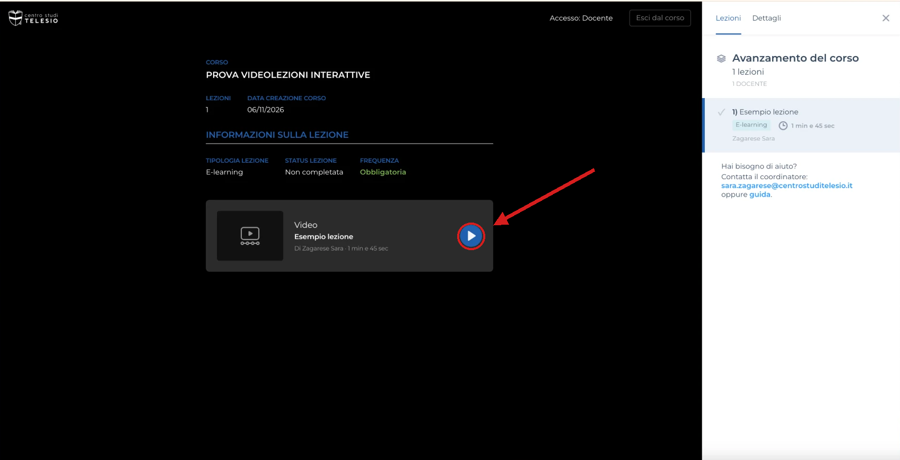
Pagina del corso: l'elenco delle lezioni è sulla destra
3
La videolezione si apre nel lettore. Da qui puoi rivederla per preparare la lezione in diretta
e controllare cosa ha studiato lo studente.
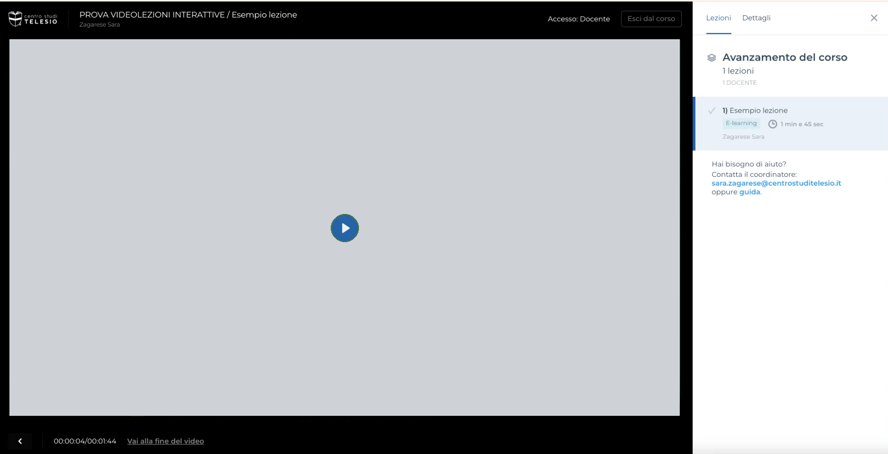
Videolezione registrata
Le immagini mostrano un corso di prova. Ogni docente vede le proprie materie.
4. Prima e durante la lezione in diretta
Guardare una videolezione non vuol dire averla capita.
La lezione in diretta serve a verificare, consolidare e approfondire quello che lo studente
ha studiato da solo.
Prima della lezione
Controlla che lo studente abbia visto le videolezioni previste dalla programmazione.
Guarda a che punto è del programma e quali argomenti ha già affrontato.
Durante la lezione
Verifica con domande mirate ed esercitazioni che abbia davvero imparato.
Distingui due casi: lo studente che ha seguito ma ha bisogno di chiarimenti,
e lo studente che ha guardato il video senza imparare.
Spiega mirato sulle difficoltà che emergono.
Rispetta l'ordine degli argomenti del corso: non anticipare contenuti che lo studente
non ha ancora affrontato.
Segnala alla Coordinatrice Didattica le criticità e i casi di mancato studio autonomo.
Come si incastrano le lezioni
Momento
Cosa si fa
Voto
Prima della diretta
Controllo delle videolezioni viste
—
Lezione in diretta
Verifica di quanto studiato, spiegazione del nuovo argomento
Nessuno
Dopo la lezione
Compiti nel Quaderno e videolezione da rivedere
—
Lezione successiva
Interrogazione sull'argomento
Sì, con il feedback
5. Registrazione della lezione (obbligatoria)
Se la registrazione non viene avviata, la lezione è considerata NON EFFETTUATA.
La registrazione resta a disposizione di studenti e famiglie per rivedere la lezione: per questo la descrizione
nel registro può restare sintetica (vedi sezione 6).
L'aula virtuale si apre dentro il browser: non serve installare niente.
La webcam deve restare accesa per tutta la lezione: sia la tua, sia quella degli studenti.
Se uno studente non vuole accenderla, o dice che non funziona, contatta la
Coordinatrice Didattica.
Come entrare in aula
1
Prima della lezione compare l'avviso «Una lezione live sta per cominciare»:
clicca «Vai alla lezione». L'avviso arriva anche per posta elettronica, all'indirizzo Outlook
attivato dalla Direzione.
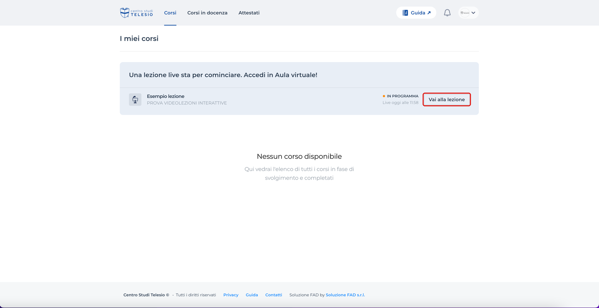
Avviso nella pagina principale
2
Nella pagina del corso, clicca il tasto ▶ della lezione.
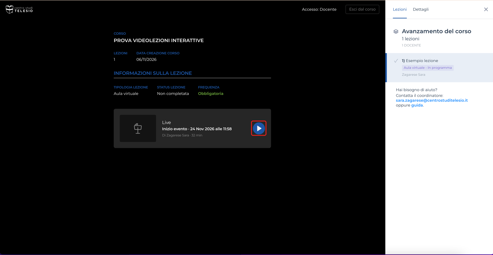
Pagina del corso
3
Clicca «Apri aula virtuale». Non premere «Annulla lezione».
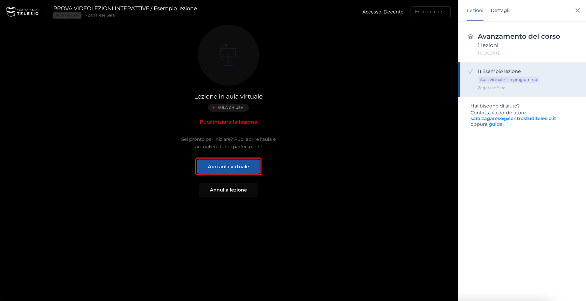
Apertura dell'aula
4
Il browser chiede di usare videocamera e microfono: scegli «Consenti durante la visita al sito».
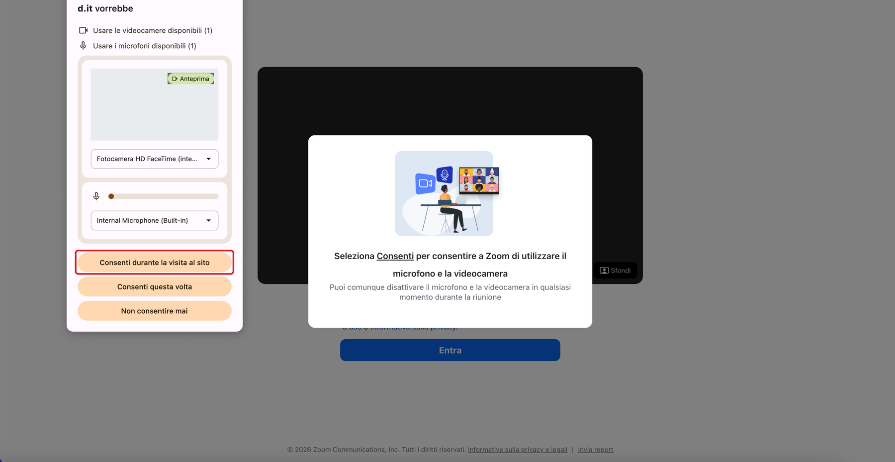
Permessi di videocamera e microfono
5
Nell'anteprima, clicca «Entra».
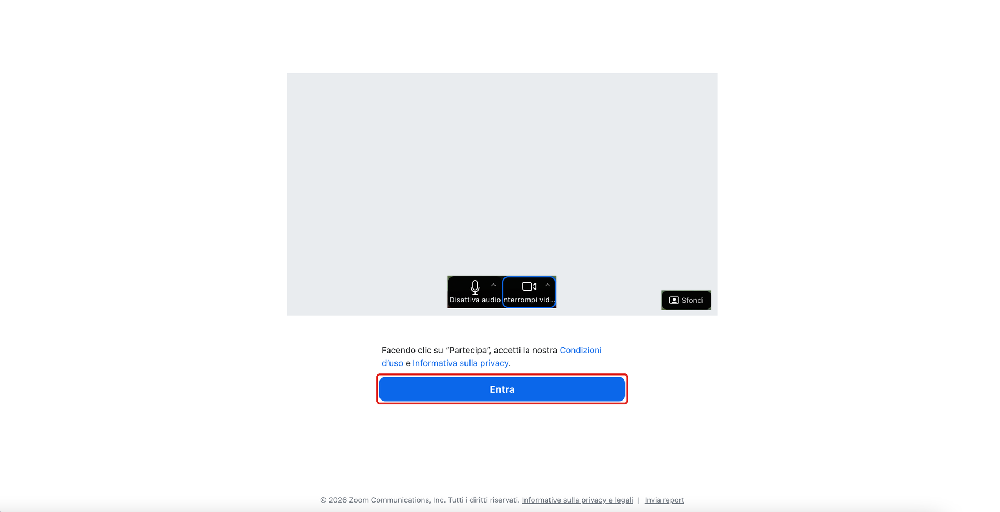
Anteprima prima di entrare
Come avviare la registrazione
La registrazione è obbligatoria.
Senza registrazione la lezione risulta non svolta.
1
Nella barra in basso clicca «Altro» (•••) → «Registra».
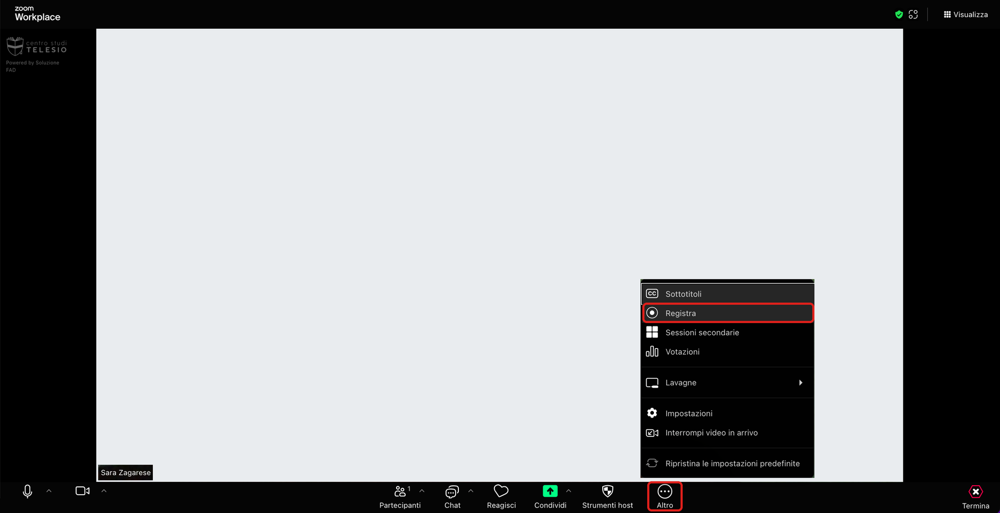
Menu «Altro»
2
Scegli «Registra nel cloud». Solo così la registrazione arriva alla piattaforma.
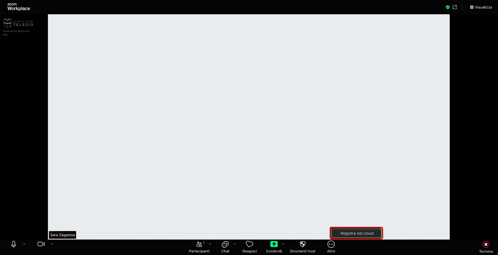
Registrazione nel cloud
3
Controlla che in alto a destra compaia ● REC. Solo da quel momento la lezione
viene registrata.
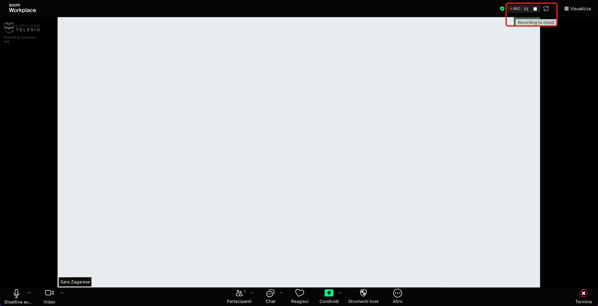
Segnale di registrazione attiva
Come chiudere la lezione
✔
A fine lezione clicca «Termina» (in basso a destra) →
«Termina riunione per tutti». Non serve fermare la registrazione a mano: si chiude con la lezione.
Non usare «Lascia riunione».
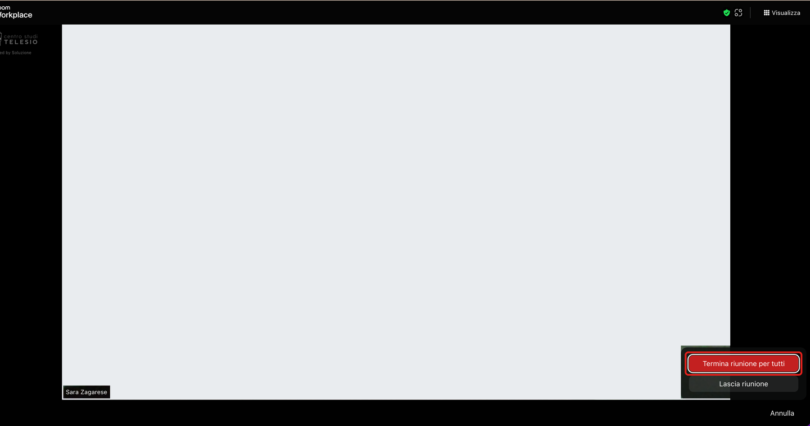
Chiusura della lezione
6. Registro elettronico
Il registro si compila lo stesso giorno della lezione. È letto anche dai genitori:
scrivere in modo chiaro, corretto e professionale.
Come aprirlo
1
Subito dopo «Termina riunione per tutti», la pagina della lezione mostra
«LEZIONE TERMINATA»: clicca «Compila registro».
Non premere «Segna come annullata».
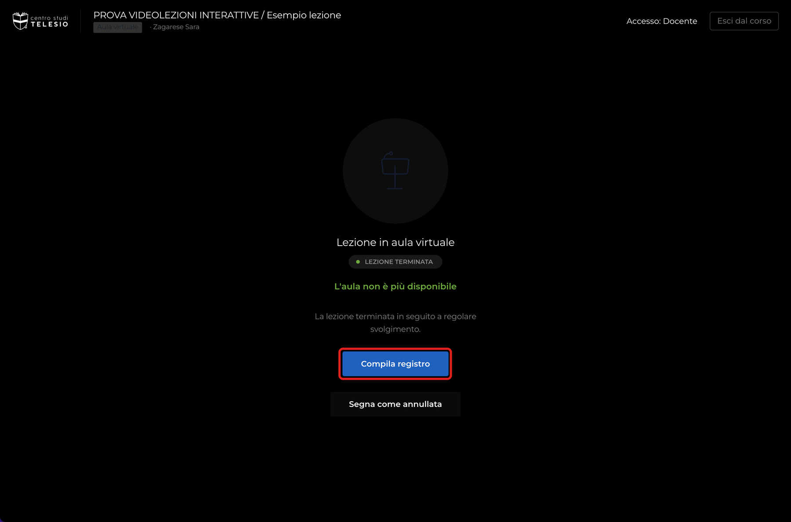
Lezione terminata
2
Per compilarlo più tardi: «Corsi in docenza» → il corso → la lezione →
«Compila registro».
3
Nel modulo: scrivi l'Argomento trattato, poi il feedback individuale
di ogni studente (si cerca per nome, cognome o ID). Alla fine clicca «Conferma».
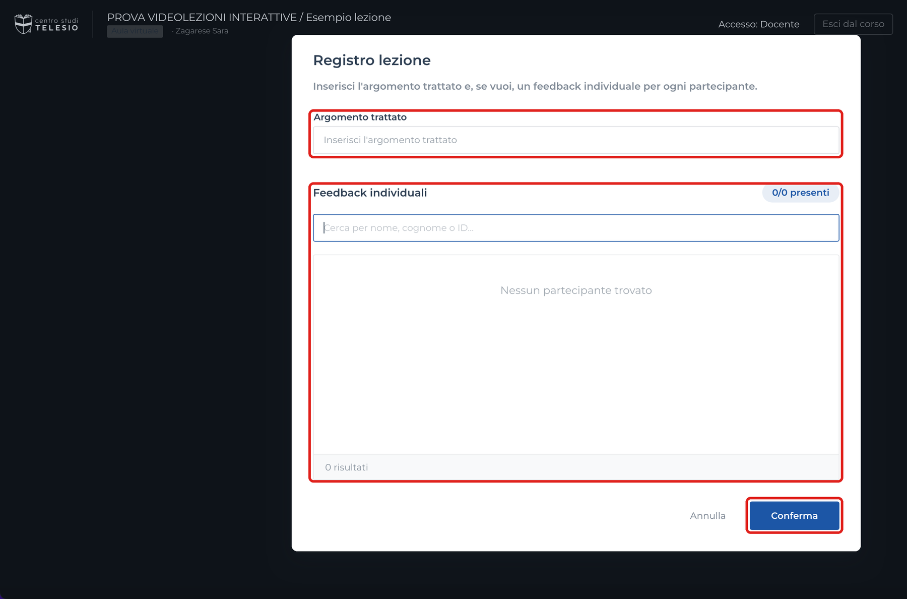
Modulo «Registro lezione»
Nel modulo non c'è un comando per segnare presente o assente: il conteggio «presenti» lo mostra la piattaforma.
Per le assenze vedi la sezione 7 di queste direttive.
Argomento trattato (descrizione della lezione)
Studenti e famiglie possono rivedere la registrazione della lezione: per questo
non serve una descrizione dettagliata. La descrizione deve essere:
sintetica: 2–4 righe;
completa: gli argomenti affrontati e le attività svolte (spiegazione, esercizi, letture, correzione dei compiti, interrogazione);
precisa: non il solo titolo dell'argomento, ma cosa è stato spiegato;
chiara, corretta e professionale: la leggono anche i genitori, quindi niente abbreviazioni, sigle non spiegate o errori;
uguale per tutta la classe: le osservazioni sul singolo studente vanno nel feedback individuale, non qui.
Troppo breve
Troppo lungo
Corretto
✕ «La comunicazione + radice e desinenza.»
✕ Mezza pagina che racconta tutta la lezione.
✔ «Gli elementi della comunicazione (emittente, destinatario, messaggio, codice, canale, contesto). Radice e desinenza: spiegazione ed esercizi guidati.»
Feedback individuale: 4 righe obbligatorie
Per ogni studente, copia questo modello e completalo:
Da copiare
Andamento: …
Difficoltà: … (oppure «nessuna»)
Da rivedere: registrazione della lezione del … / videolezione «…»
Compiti: caricati nel Quaderno dei compiti, da consegnare entro il …
Esempio
Andamento: ha seguito con attenzione e ha svolto correttamente gli esempi guidati.
Difficoltà: riconosce la desinenza solo nelle parole più semplici.
Da rivedere: registrazione della lezione del 24/11.
Compiti: caricati nel Quaderno dei compiti, da consegnare entro il 27/11.
Prima di confermare, controlla che i compiti siano davvero nel Quaderno e che la scadenza sia
la stessa scritta qui.
7. Assenze
Se lo studente non entra in aula, il docente segue sempre questo iter.
1
Contatta lo studente. Se non risponde, chiama i genitori.
2
Chiudi l'aula se non risponde nessuno.
3
Avvisa la Segreteria Didattica e la Coordinatrice Didattica.
4
Compila il registro con la dicitura giusta fra queste due:
«Assente (assenza comunicata dalla Segreteria)» — lo studente aveva avvisato e la
Segreteria te lo ha comunicato prima della lezione;
«Assente (assenza comunicata alla Segreteria)» — nessuno aveva avvisato: sei in aula,
lo studente non si presenta e sei tu a segnalarlo alla Segreteria.
5
Indica il titolo della lezione in diretta nell'argomento trattato.
6
Assegna comunque i compiti, anche se la lezione non si è svolta.
Tipo di assenza
Cosa si assegna
Assenza collegiale nessuno studente presente
È obbligatorio riconsolidare la lezione registrata (associata all'alunno)
che sarebbe stata oggetto dell'interrogazione quotidiana.
Assenza singola manca un solo studente
Studio della registrazione della lezione in diretta, ai fini dell'interrogazione, più i relativi compiti.
Eccezione: per gli studenti indicati dalla Coordinatrice Didattica il docente
salta i contatti telefonici (punti 1, 2 e 3) e parte direttamente dal punto 4.
Quando lo studente avvisa in anticipo la Segreteria Didattica, è la Segreteria a informare
il docente. Se la lezione è individuale, la Segreteria la elimina dalla piattaforma e avvisa il docente.
8. Voti e interrogazioni
Il voto si mette solo nella lezione in cui c'è stata davvero un'interrogazione o una verifica.
Lezione
Cosa si fa
Voto
Lezione 1
Spiegazione dell'argomento
Nessuno
Dopo la lezione
Compiti nel Quaderno più registrazione o videolezione da rivedere
—
Lezione 2
Interrogazione sull'argomento della lezione 1
Sì, con il feedback
Nella lezione con l'interrogazione, l'argomento trattato lo dice: «Interrogazione su: …».
9. Compiti e Quaderno dei compiti
È obbligatorio assegnare i compiti a ogni lezione.
Nessuna lezione si chiude senza compiti o attività assegnati, con la loro scadenza.
I compiti si caricano solo nel Quaderno dei compiti, al termine della lezione.
Non si usano più il file di testo e le cartelle della piattaforma.
Nel Quaderno vanno: compiti ed esercitazioni, slide, mappe concettuali, materiali di approfondimento.
Ogni attività ha due date: data di inserimento e data di consegna.
Le date devono essere le stesse scritte nel feedback del registro.
Il compito può essere anche lo studio di un argomento: «Studiare: gli elementi della comunicazione».
Come si assegna: nel Quaderno, pulsante «Assegna un compito» → materia, studente,
titolo, consegna, «Da consegnare entro».
Quando si consegnano le correzioni
Le correzioni dei compiti si consegnano due volte a settimana: il martedì e il venerdì.
10. Studenti BES: la mappa si costruisce insieme
Sezione obbligatoria.
Riguarda gli studenti BES, i cui nomi vengono comunicati a ciascun docente dalla
Coordinatrice Didattica.
Perché si fa
La mappa non è un materiale da consegnare già pronto. È lo studente che la costruisce, perché è
costruendola che mette in ordine i concetti e li ricorda. Il docente non la prepara a casa:
la fa insieme all'alunno, durante la lezione.
Quando si fa
Solo per gli studenti BES: l'ultimo quarto d'ora di ogni lezione in diretta è dedicato alla mappa.
Il docente regola la spiegazione per lasciare liberi questi quindici minuti. Per gli altri studenti la lezione si
svolge per intero.
Come si entra
1
Apri il Quaderno dei compiti e inserisci il tuo codice.
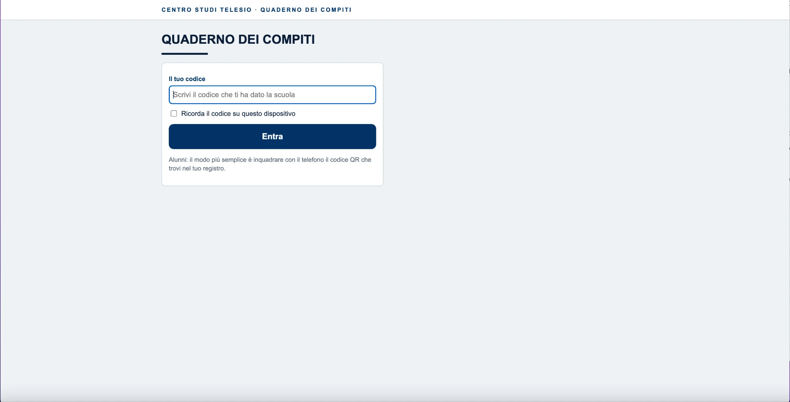
Accesso al Quaderno dei compiti
2
Clicca «Mappe degli alunni».
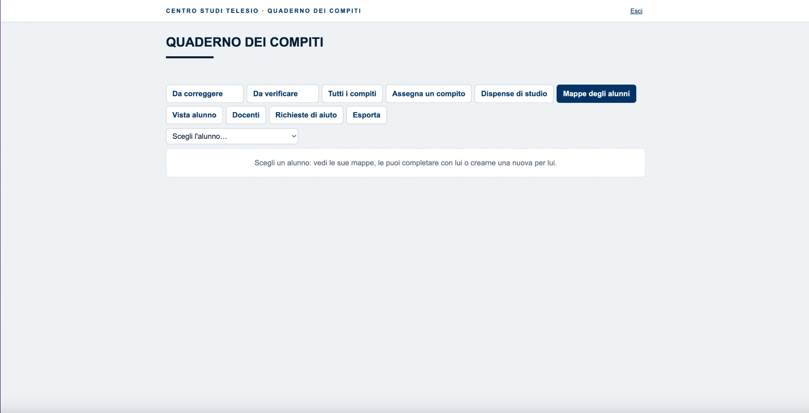
Il pulsante «Mappe degli alunni»
3
Scegli l'alunno dal menu a tendina. Compaiono le mappe che ha già fatto.
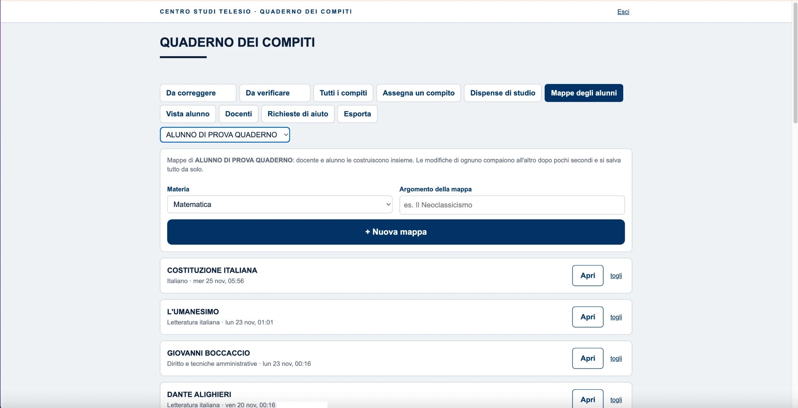
Le mappe già costruite dall'alunno
Come si crea una mappa nuova
4
Scegli la Materia, scrivi l'Argomento della mappa,
poi clicca «+ Nuova mappa». Per riprendere una mappa già iniziata clicca invece
«Apri» accanto al suo titolo.
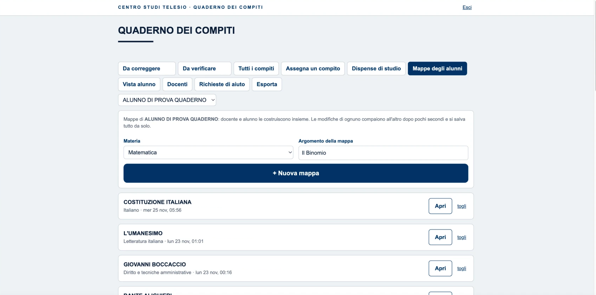
Creazione di una nuova mappa
Come si riempie
Si lavora nella colonna di sinistra. A destra la mappa si disegna da sola, mano a mano che scrivi.
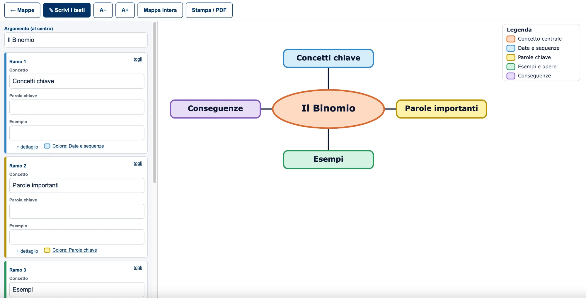
A sinistra si scrive, a destra la mappa si costruisce da sola
In alto c'è l'Argomento, che è il concetto centrale della mappa. Sotto ci sono i rami.
Ogni ramo ha tre caselle:
Casella
Cosa ci va
Concetto
L'idea principale del ramo. È quello che compare nel riquadro della mappa
Parola chiave
La parola che lo studente deve ricordare
Esempio
Un esempio concreto, con le parole dello studente
«+ dettaglio» aggiunge altre righe dentro lo stesso ramo.
«+ ramo» aggiunge un ramo nuovo. Il pulsante si trova in fondo alla colonna di
sinistra: scorri la colonna fino in basso, sotto l'ultimo ramo, e lo vedi.
«togli» cancella il ramo.
I colori
Ogni ramo ha un colore, che si sceglie con «Colore:» in fondo al ramo. I colori non sono decorazione:
ognuno vuol dire una cosa precisa, ed è sempre la stessa in tutte le materie. La legenda resta visibile in alto a destra.
Colore
Significato
Pesca
Il concetto centrale
Celeste
Date e sequenze
Giallo paglierino
Parole chiave
Verde menta
Esempi e opere
Lilla
Conseguenze
Gli altri pulsanti in alto
«← Mappe»: torna all'elenco delle mappe dell'alunno.
«Scrivi i testi»: apre la colonna di scrittura.
«A−» e «A+»: rimpiccioliscono e ingrandiscono le scritte della mappa.
«Mappa intera»: mostra la mappa a tutto schermo, senza la colonna.
«Stampa / PDF»: salva la mappa in PDF, da dare allo studente.
Tre cose da sapere
Si salva da solo. Non c'è nessun pulsante «Salva».
Potete scrivere tutti e due insieme. Quello che scrive uno compare all'altro dopo pochi secondi.
La mappa resta nel Quaderno dell'alunno. La ritrova quando studia e quando ripassa.
Come si lavora in quei quindici minuti
Scrive lo studente, guida il docente. Non il contrario.
Si usano le parole dello studente, non quelle del libro.
Si parte dal concetto centrale, poi un ramo alla volta.
Una mappa per argomento. Alla lezione dopo si riapre e si amplia.
Nel feedback individuale il docente scrive che la mappa è stata costruita e su quale argomento.
11. Videolezioni
Ogni docente gestisce in autonomia le videolezioni della propria materia:
dopo la lezione in diretta, sceglie nel corso della sua materia la videolezione sullo stesso argomento;
la indica nel feedback, alla riga «Da rivedere»;
nella lezione successiva verifica che lo studente l'abbia seguita e compresa.
Sequenza: controllo prima della diretta → lezione in diretta (verifica e spiegazione) →
videolezione (consolidamento) → studio e compiti → lezione successiva (interrogazione e voto).
Compiti delle videolezioni: lo studente li svolge nella pagina della videolezione e preme
«Consegna». Arrivano da soli nel Quaderno del docente, che li corregge come gli altri.
12. Errori da evitare
Da non fare
Da fare
✕ Fare lezione senza registrazione
✔ Avviare «Registra nel cloud» e controllare ● REC
✕ Fare lezione con la webcam spenta, tua o degli studenti
✔ Webcam accesa per tutta la lezione; se uno studente non la accende, avvisare la Coordinatrice
✕ Premere «Annulla lezione» o «Segna come annullata»
✔ «Apri aula virtuale» e, a fine lezione, «Compila registro»
✕ Iniziare la diretta senza sapere cosa ha visto lo studente
✔ Controllare prima le videolezioni viste
✕ Anticipare argomenti non ancora affrontati
✔ Rispettare l'ordine del corso
✕ Descrizione di una riga o di mezza pagina
✔ 2–4 righe: argomenti e attività
✕ Feedback generico («ha ascoltato la lezione»)
✔ Le 4 righe: andamento, difficoltà, da rivedere, compiti
✕ Lezione senza compiti
✔ Compiti sempre, con scadenza
✕ Scadenza diversa tra registro e Quaderno
✔ La stessa data nei due posti
✕ Voto nella lezione di spiegazione
✔ Voto solo dopo l'interrogazione
✕ Mappa preparata dal docente e consegnata allo studente BES
✔ Mappa costruita insieme, nell'ultimo quarto d'ora
✕ Correzioni consegnate quando capita
✔ Correzioni il martedì e il venerdì
Contatti
Per dubbi o problemi (una videolezione che manca o non corrisponde al programma, un problema tecnico, il Quaderno):
Coordinatrice Didattica, Prof.ssa Sara Zagarese.
Per le assenze degli studenti: Segreteria Didattica.